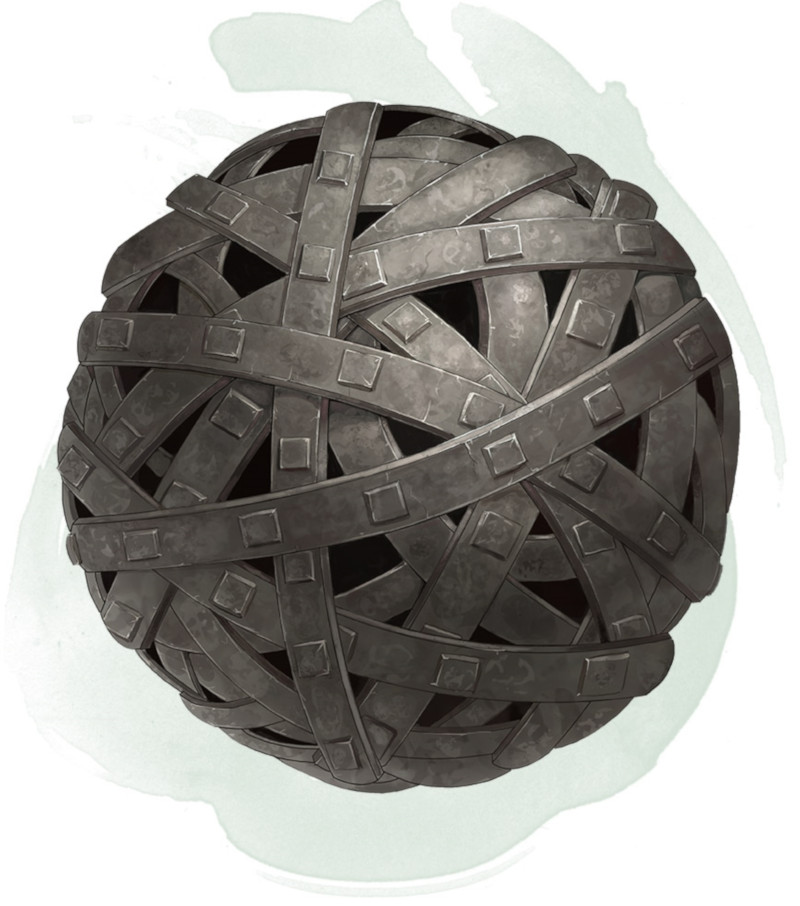

Liens de fer de Bilarro
Objet merveilleux, rare
Cette sphère de fer rouillé mesure 7,50 centimètres de diamètre et pèse 500 grammes. Vous pouvez utiliser une action pour prononcer le mot de commande et lancer la sphère sur une créature de taille G ou inférieure que vous pouvez voir et située dans un rayon de 18 mètres autour de vous. Alors que la sphère progresse dans les airs, elle s'ouvre en un enchevêtrement de bandelettes métalliques.
Effectuez un jet d'attaque à distance avec un bonus à l'attaque égal à votre modificateur de Dextérité + votre bonus de maîtrise. Si vous touchez, la cible est entravée jusqu'à ce que vous utilisiez une action bonus pour répéter le mot de commande et ainsi la libérer. En faisant cela, ou en échouant votre jet d'attaque, les bandelettes se rétractent et reprennent une nouvelle fois l'aspect d'une sphère.
Une créature, dont celle qui est entravée, peut utiliser une action pour effectuer un jet de Force DD 20 pour briser les bandelettes métalliques. En cas de réussite, l'objet est détruit, et la créature entravée est libérée. Si le jet échoue, toute tentative future tentée par la même créature échouera automatiquement au cours des 24 prochaines heures. Une fois que les bandelettes sont utilisées, elles ne peuvent être réutilisées avant le prochain lever le soleil.
Effectuez un jet d'attaque à distance avec un bonus à l'attaque égal à votre modificateur de Dextérité + votre bonus de maîtrise. Si vous touchez, la cible est entravée jusqu'à ce que vous utilisiez une action bonus pour répéter le mot de commande et ainsi la libérer. En faisant cela, ou en échouant votre jet d'attaque, les bandelettes se rétractent et reprennent une nouvelle fois l'aspect d'une sphère.
Une créature, dont celle qui est entravée, peut utiliser une action pour effectuer un jet de Force DD 20 pour briser les bandelettes métalliques. En cas de réussite, l'objet est détruit, et la créature entravée est libérée. Si le jet échoue, toute tentative future tentée par la même créature échouera automatiquement au cours des 24 prochaines heures. Une fois que les bandelettes sont utilisées, elles ne peuvent être réutilisées avant le prochain lever le soleil.
Dungeon Master´s Guide (SRD)
